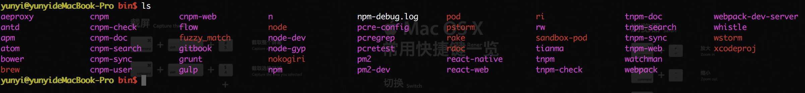

node>4.0 npm>3.3

JDK 7.0以上
环境变量如下配置：
vi ~/.bash_profile
# java环境变量
export JAVA_HOME=/Library/Java/JavaVirtualMachines/jdk1.7.0_79.jdk/Contents/Home
# maven内存配置
export MAVEN_OPTS='-Xms256m -Xmx1024m'
# Android SDK配置
export ANDROID_HOME=/Users/yunyi/Library/Android/sdk
export PATH=$PATH:/usr/local/mysql/bin
# maven 路径配置
export PATH=$PATH:/Users/yunyi/maven-2.2.1/bin
# android 命令行配置
export PATH=$PATH:${ANDROID_HOME}/tools:${ANDROID_HOME}/platform-tools
# for color
export CLICOLOR=1
# \h:\W \u\$
export PS1='\[\033[01;33m\]\u@\h\[\033[01;31m\] \W\$\[\033[00m\] '
# grep
alias grep='grep --color=always'
# nvm快捷方式
source ~/.nvm/nvm.sh